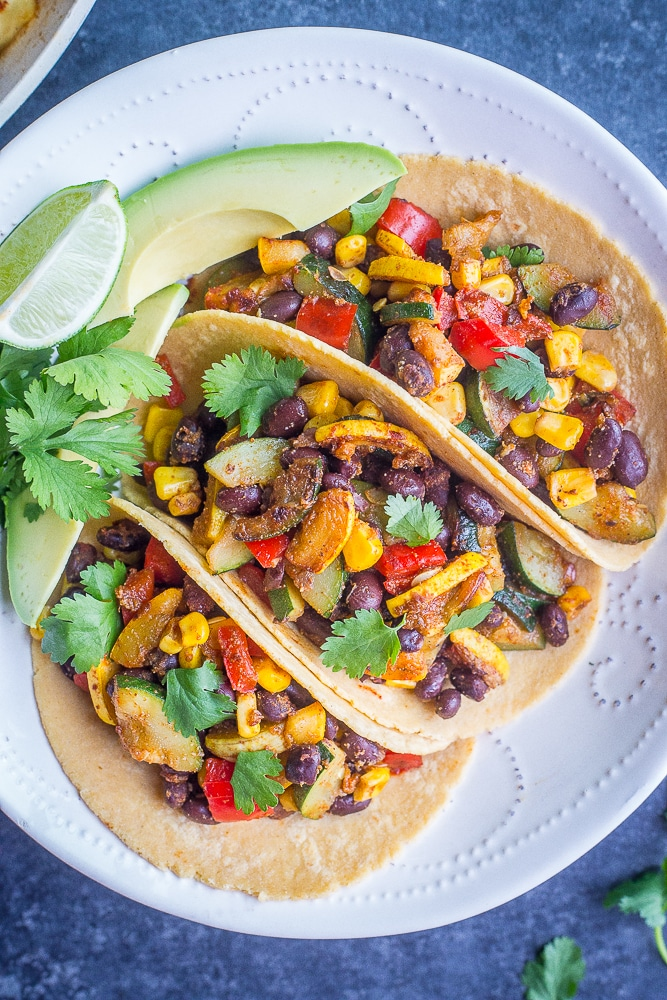

🌮 Mexican
⏱️ 25 Mins
🌱 Vegetarian
Ingredients
- 1 can (400g) Black beans, drained and rinsed
- 1/2 Onion, chopped
- 1 clove Garlic, chopped
- 1/2 cup Corn (frozen or canned)
- 1 tsp Cumin
- 1/2 tsp Chili powder
- 12 Small corn or flour tortillas
For Serving:
- Avocado or Guacamole
- Diced tomatoes
- Diced cilantro (optional)
Instructions
- Heat a little oil in a pan over medium heat. Sauté onions for 5 minutes until soft. Add garlic and sauté for 1 more minute.
- Add black beans, corn, cumin, and chili powder. Mash half of the beans with a fork and mix well. Cook for 5-7 minutes.
- Warm the tortillas in a dry skillet or microwave.
- Spoon the bean mixture into each tortilla.
- Top with tomatoes, avocado, and cilantro, and serve immediately.